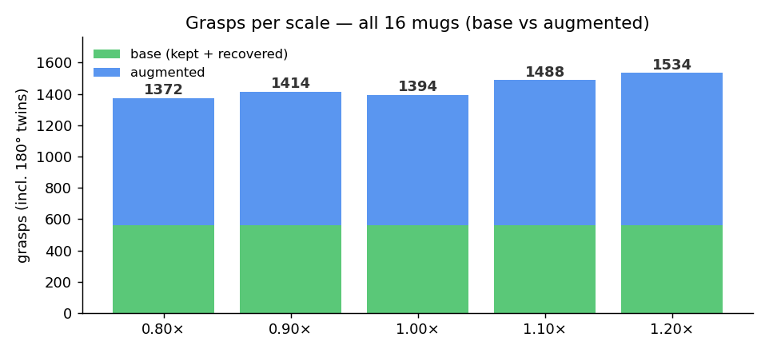
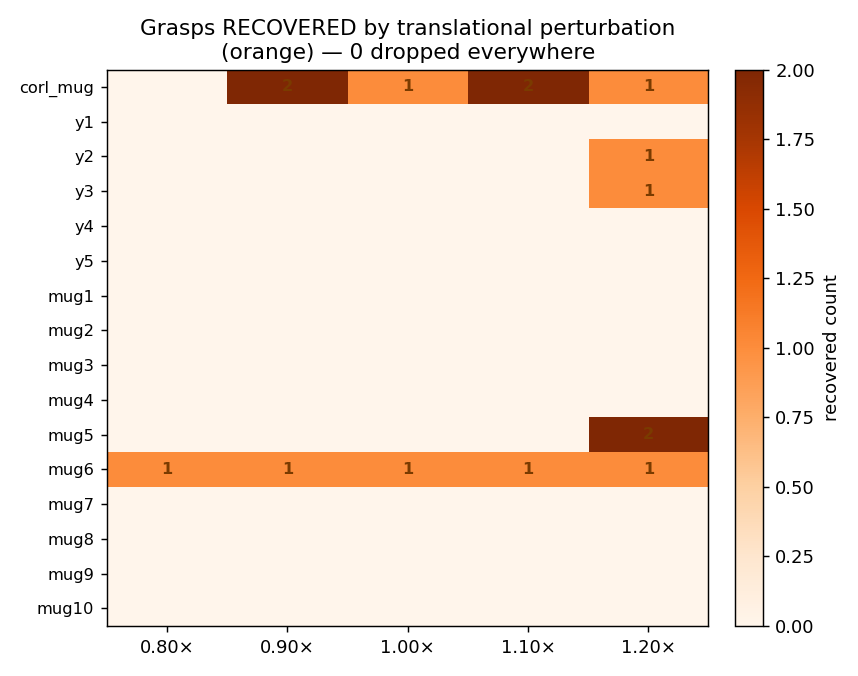

Re-validate every cousin-mug grasp at multiple sizes, translationally perturb the ones that break, and mine extra valid grasps — producing a grasps_per_scale.json per mug for the scaled-USD / IK-table bake. · 2026-05-26
--merge: 1598 grasps, 24 recoveries, gaps up to 53 mm.)
You can't just shift the gripper pose by a constant when the mug grows; the grasp scales, and whether it stays a valid grasp depends on the scale mode:
| Scale mode | Force closure | What must be recomputed |
|---|---|---|
Uniform diag(s,s,s) | Preserved — a similarity transform is angle-preserving, so the grasp-line ↔ normal angles (the force-closure condition) are identical. Only the contact gap widens. | Just re-check the gap fits the gripper + recompute gripper_close. |
Z-only / anisotropic diag(1,1,s) | NOT preserved — normals transform by diag(1,1,1/s) and renormalize (different factor than the grasp line), so grasps genuinely lose closure. | Must re-run check_antipodal and prune/recover. |
This is borne out empirically: uniform 0.8–1.2 needed only 15 translational recoveries across all 80 mug×scale combos, and 0 grasps were unrecoverable.
check_antipodal reports force-closure contact AND the gripper is collision-free at some open width in gap + {12,20,30,40} mm (it opens wider to straddle the mug). This reproduces the editor's 97–100% and re-validates 561/565 (99.3%) of the existing grasps.


Confirm the existing grasps pass the editor's force-closure + collision-free definition before scaling — and pin down the validity rule. Result: 561/565 (99.3%) valid (4 borderline: corl_mug 2, mug9 2).
For each mug × scale: scale the contact point with the mesh, re-check validity, recover invalid grasps by jittering the TCP position in its own frame (radius ramps 0→--jitter-cm over --max-tries), and mine --augment-per-seed extra valid grasps around each seed. Each kept grasp also emits its 180°-approach twin. Reuses interactive_hamer_xarm.check_antipodal + make_gripper_collision_mesh (cached by 1 mm width bucket — it loads 7 STLs + URDF FK per call) and viser_hand_gripper_toggle.drive_for_width for gripper_close.
python perturb_grasps_per_scale.py # all mugs, uniform 0.8..1.2
python perturb_grasps_per_scale.py --mugs y2 mug1 --scales 0.8 1.2
python perturb_grasps_per_scale.py --scales 1.5 --merge # ADD a scale, keep existing keys
python perturb_grasps_per_scale.py --mode zonly --scales 0.8 1.2 # anisotropic heightWrites <mug>/grasps/grasps_per_scale.json (keyed by scale tag "0.80".."1.20" or "z0.80"), each grasp carrying position, orientation, width (open), close_gap_mm, gripper_close, perturbed, augmented, score, plus grasps_per_scale_summary.json.
Rebuild each scale's mesh from scratch and re-check every stored grasp passes force-closure + collision-free on its own scale's mesh — does not trust the writer. Result: 7202/7202 (100%).
python validate_grasps_per_scale.pyBrowse the per-scale collections: pick a mug + scale, see a ghost gripper at every grasp colored by category. Switch scales to watch the augmented grasps densify and spot the orange recoveries where scaling forced a fix.
python view_grasps_per_scale.py --mug corl_mug --port 8087 # http://localhost:8087green = kept (valid as-is) orange = recovered (translationally perturbed) cyan = augmented. Toggles per category, mug-mesh on/off, gripper opacity.
--scales (any list), --mode uniform|zonly, --max-tries 300, --jitter-cm 2.0 (search radius), --squeeze-mm 3, --augment-per-seed 4, --min-sep-mm 5. Validity is pivot-invariant, so meshes are scaled about the centroid in the editor frame (centre + scale to REAL_MUG_HEIGHT=0.10, exactly compute_grasp_close_values.py:47-49); deployment grounding stays downstream in build_cousin_usds.py / ground_cousin_grasps.py.
The per-scale grasp files feed the scaled-USD + slim IK-table bake (one variant per (mug, scale), cycled via xarm7_runner_v2 --mug-pool). The runner re-solves IK live and reads only T_grasp_body + frame-0 seed + gripper_close from each table — see DUALSEED_IK.html and the cousin IK-table slim builder.